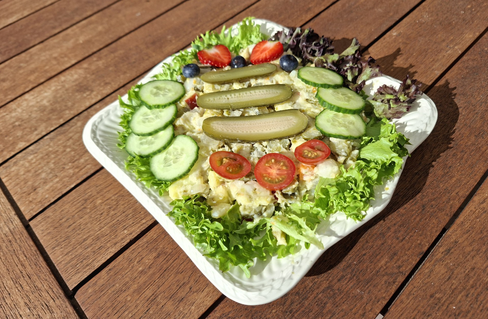

enge aardappels

finse witte kool rolletjes

gado gado

chocolade cheesecake

strawberry daiquiri cocktail

zomerse salade

salade met gegrilde ananas

banh mi cat ba style

banh xeo hoi an style

avocado salade

amerikaanse caesar salade

italiaanse caponata

biefstuk chimichurri & gegrilde groenten

bieten carpaccio

falafelwrap

vega koajsjottel
De vega variant op Limburgs koajsjotel, oftewel huzarensalade!

Bereidingsduur: 45 minuten
Aantal personen: 6
Ingrediënten:
500 gram aardappels
100 gram winterpeen
200 gram sperziebonen uit glazen pot
200 gram zilveruitjes
200 gram augurken
0,5 stuk appel
2 eetlepels mayonaise
naar smaak zout en peper
enkele aardbeien
enkele bosbessen
0,25 stuk komkommer
enkele cherrytomaatjes
krop 0,5 sla
500 gram aardappels
100 gram winterpeen
200 gram sperziebonen uit glazen pot
200 gram zilveruitjes
200 gram augurken
0,5 stuk appel
2 eetlepels mayonaise
naar smaak zout en peper
enkele aardbeien
enkele bosbessen
0,25 stuk komkommer
enkele cherrytomaatjes
krop 0,5 sla
Instructies:
1. Schil de aardappelen en de winterpeen en snijd in kleine blokjes. Kook deze tot beetgaar en laat dit afkoelen.
2. Neem een mengkom en doe hier de aardappels en wortel in. Bewaar 1 grote augurk voor de garnering. Snijd de zilveruitjes, augurken en appel in kleine stukjes. Laat de sperziebonen uitlekken en voeg dit alles toe aan de kom.
3. Voeg de mayonaise en 2 eetlepels van het augurkenvocht toe. Schep alles goed om en plet het met een stamper. Breng op smaak met peper en zout. Snijd ondertussen de aardbeien doormidden en de augurk, komkommer en de cherrytomaatjes in plakjes.
4. Scheur sla van de krop en leg deze op een mooie serveerschaal. Verdeel hierover de koude schotel en druk iets aan. Garneer hierover de augurk, komkommer, cherrytomaatjes, aardbeien en bosbessen.
1. Schil de aardappelen en de winterpeen en snijd in kleine blokjes. Kook deze tot beetgaar en laat dit afkoelen.
2. Neem een mengkom en doe hier de aardappels en wortel in. Bewaar 1 grote augurk voor de garnering. Snijd de zilveruitjes, augurken en appel in kleine stukjes. Laat de sperziebonen uitlekken en voeg dit alles toe aan de kom.
3. Voeg de mayonaise en 2 eetlepels van het augurkenvocht toe. Schep alles goed om en plet het met een stamper. Breng op smaak met peper en zout. Snijd ondertussen de aardbeien doormidden en de augurk, komkommer en de cherrytomaatjes in plakjes.
4. Scheur sla van de krop en leg deze op een mooie serveerschaal. Verdeel hierover de koude schotel en druk iets aan. Garneer hierover de augurk, komkommer, cherrytomaatjes, aardbeien en bosbessen.